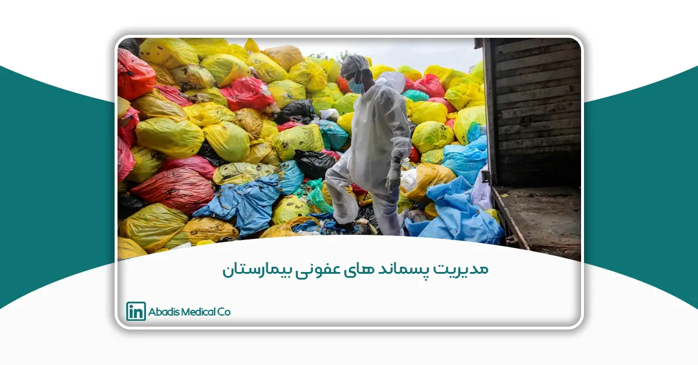

این مقاله توسط سرکارخانم دكتر منصوره ابوفاضلی، جناب آقای نيمارضاعلی و سرکارخانم نيلوفررضاعلی نوشته شده؛ و برای یازدهمین کنگره کنترل عفونت ارسال شده است.
چكيده
پسماندهاى بيمارستانی، زائداتی هستند كه در نتيجه فعاليتهاى پزشكی، آزمايشگاهی، پرستارى، دندانپزشكی، دارویی و ساير فعاليتهاى مشابه در بيمارستانها و ديگر مراكز درمانی و همچنين در مراكز تحقيقاتی مربوطه توليد میشود. زائـدات بيمارستانی ويژگیهاى خاصی نسبت به ساير موادزائد و زبالههاى شهرى دارد، در عين حال، بايد بيمارستانها را از مؤسسـات نادرى به حساب آورد كه در آنها از موادشيميایی به مقدار وسيع و متنوعی اسـتفاده ميشود. سـازمان بهداشت جهانی (WHO)، پسماندهاى خطرناک را به ٩ دسته شامل زباله هاى عفونی، زبالههاى پاتولوژى و آسيب شناسی، اجسام نوك تيز، زباله هاى دارویی، زباله هاى ناشی از درمان سرطان يا ژنوتوكسيک، زباله هاى شيميایی، زبالههاى حاوى مقدار زياد فلزات سنگين، كپسولهاى فشار و زباله هاى راديواكتيو تقسيم میكند. براساس برآورد انجام شده در بيمارستانها، بيش از ٦٣٠ نوع مواد شيميایی مختلف استفاده میشود كه ٣٠٠ نوع غيرسمی و ۳۰ نوع آن سمی و خطرناک و حدود ٣٠٠ نوع آن كم خطر هستند. اغلب اين مواد، آلوده به ذرات عفونی بوده و منبع بيماریهاى خونی همچون هپاتيت، HIV و… هستند. تفكيک زبالههاى عفونی از غيرعفونی نه تنها باعث حفظ محيط زيست خواهد شد، بلكه از انتقال آلودگی و انتشار آن در سـطح شهر توسط افراد سودجو جلوگيرى مینمايد و احتمال آلودگی پرسنل پرستارى و خدماتی را كاهش میدهد. عدم تفكيک به موقع زبالههاى عفونی دلايل متعددى دارد، يكی از اين عوامل، ضعف آموزش خدمات و پرسنل مربوطه، پرستاران و كمبود نيروى آگاه جهت تجهيزات و دستگاههاى به روز از ديگر عوامل مؤثر در اين مسئله است ،نامناسب بودن روشهاى جمع آورى زباله هاى مراكز درمانی و نامناسب بودن روش انتقال زبالهها نيز در اين مسئله تأثير به سزایی دارد. مراحـل مختلـف مـديريت پسماندهاى پزشكی شامل جداسازى، بسته بندى و برچسب گذارى، جمع آورى، حمل و نقل، تصفيه و دفع كه آسانترين روش شناسایی انواع زبالههاى بيمارستانی، استفاده از كيسههاى پلاستيكی كدبندى شده رنگی است. پيشنهادات WHO براى كدگذارى رنگی زبالههاى بيمارستانی به صورت زير است: -زبالههاى عفونی؛ كيسه قرمز، سـاير زبالـه هـاى عفـونی پاتولوژيک و تشريحی؛ كيسه زرد، وسايل نوک تيز؛ كيسه زرد يا قرمز، زباله هاى دارویی و شيميایی؛ كيسه قهوه اى و زبالههاى بيمارستانی بیخطر در كيسههاى سياه براى تدوين طرح جامع مديريت مواد زائد بيمارستاني، رياست بيمارستان بايد نسبت به تشكيل تيم مديريت مواد زائد اقدام نمايد و منابع مالی و انسانی كافی براى اين طرح تخصيص دهد ، از سوى ديگر، چهار گروه از پرسنل بيمارستان بايد تحت آموزش قرار گيرد. همچنين نحوه دفع زباله هاى حاصل از فعاليتهاى بهداشتی و درمانی خود میتواند خطرى براى بهداشت جامعه باشد. علاوه بر خطرناک بودن عوامل عفونی اينگونه زبالهها، قرار گرفتن در معرض ماده سمی Furants Dioxin ناشی از سوختن آنها، درسطح كم و در درازمدت میتواند به نقص سيستم ايمنی و رشد ناقص سيستم عصبی، غدد درونريز و سيستم توليدمثل بيانجامد و در سطح بالا و در كوتاه مدت نيز منجر بـه ايجاد زخمهاى پوستی و اختلالات كبدى گردد. بدون شک براى ايجاد شهرى سالم دفـع مناسب پسـماندهاى بيمارستانی در دستيابی به اين مهم، اهميت فراوانی دارد.
كلمات كليدى: پسماند بيمارستانی-مديريت زبالههاى عفونی
مقدمه
پسماندهاى بيمارستانی، زائداتی هستند كه در نتيجه فعاليتهاى پزشكی، آزمايشگاهی، پرستارى، دندانپزشكی، داروئی و ساير فعاليتهاى مشابه در بيمارستانها و ديگر مراكز درمانی و همچنين در مراكز تحقيقاتی مربوطه توليد میشود.
زائدات بيمارستانی ويژگیهاى خاصی نسبت به ساير موادزائد و زبالههاى شهرى دارد، در بيمارستانها انواع اقدامات درمانی از جمله شيمیدرمانی، دياليز، جراحی ترميمی، زايمان، قطع و خارج ساختن اندامهاى بدن مانند آپانديس، آزمايشات طبی، اتوپسی و مشابه آنها انجام میشود ،در عين حال، بايد بيمارستانها را از مؤسسات نادرى به حساب آورد كه در آنها از موادشيميایی به مقدار وسيع و متنوعی استفاده میشود. پسماندهاى توليدى توسط مراكز درمانی شامل دو دسته پسماندهاى معمولی يا خانگی و پسماندهاى خطرناک هستند، پسماندهاى معمولی زبالههایی هستند كه براى جلوگيرى از خطرات عفونی در طی مراحل مديريت، به روشهاى مديريتی ويژهاى نياز دارند و در صورت مخلوط شدن با يكديگر نبايد بازيافت شوند، همچون خون، مايعات، لباسهاى خاكی يا زبالههاى آغشته به اين مواد.
مبحث زبالههاى بيمارستانی نه تنها در كشورهاى جهان سوم و توسعه نيافته كه در اغلب كشورهاى صنعتی نيز به يک معضل تبديل شده است. به گونهاى كه مكزيک با ١٠٧ ميليون جمعيت تنها سه نهاد مسئوليت حمل و نقل بیخطر و دفع زباله هاى عفونی بيمارستانها را كه حجم آن سالانه به گفته وزير بهداشت اين كشور ٧٠٠ هزار تن و به عبارت ديگر يک و نيم كيلوگرم براى هر تخت بيمارستان است بر عهده دارند؛ در كشور آلمان نيز اين مسأله در حال تبديل شدن به یک معضل است.
آلمانیها در سالهاى اخير طرحهاى بسيارى بدين منظور ارائه كردهاند، از آن جمله میتوان به«طرح اقتصادى زباله» اشاره كرد كه يكی از اهداف مهم آن چگونگی مديريت صحيح زبالههاى بيمارستانی است.
زبالههاى خاص بيمارستانی نيز كه اصطلاحاً زباله هاى عفونی ناميده میشوند نيازمند شيوه برخوردى بسيار دقيـق و البته خاص میباشند، به ويژه كه اين مسأله ديدگاههاى اجتماعی وسيعترى را نيز مطرح میكند كه مهمترين آن تهديد محيط زيست و در نهايت خود انسان است.
سازمان بهداشت جهانی (WHO)، پسماندهاى خطرناک را به ٩ دسته شامل زبالههاى عفونی، زبالههاى پاتولوژى و آسيب شناسی، اجسام نوك تيز، زبالههاى دارویی، زباله هاى ناشی از درمان سرطان يا ژنوتوكسيک، زبالههاى شيميایی، زبالههاى حاوى مقدار زياد فلزات سنگين، كپسولهاى فشار و زبالههاى راديواكتيو تقسيم میكند.
هدف
هدف از اين پژوهش بررسی انواع پسماندهاى عفونی بيمارستانها و شناسايی مضرات ومخاطرات دفع غير بهداشتی و روشهاى مختلف دفع اين زائدات بيمارستانی و روشهاى تصفيه، گندزدائی و دفع بهداشتی اين مواد میباشد.
روش پژوهش
اين پژوهش یک مطالعه مرورى و توصيفي بوده كه به بررسي زباله هاى بيمارستانی،سلامت جامعه و دفع بهداشتي با مرورى بر مقالات متعدد و كتاب ودستورالعملهاى وزارت بهداشت و درمان و سايتهاى مختلف دراين زمينه پرداخته است.
نتايج
براساس برآورد انجام شده در بيمارستانها، بيش از ۶٣٠ نوع موادشيميایی مختلف استفاده میشود كه ٣٠٠ نوع غيرسمی و ٣٠ نوع آن سمی و خطرناك و حدود ٣٠٠ نوع آن كمخطر هستند .بخشی از اين مواد پس از مصرف بهصورت زائدات همراه زبالههاى بيولوژيک و راديوايزوتوپها در محيط بيمارستانی توليد میگردد، بايد به اين قبيل زائدات، اجسام تيز و برنده آلوده مانند سرنگ، تيغهاى جراحی و اشياء مشابه را اضافه نمود. اغلب اين مواد، آلوده به ذرات عفوني بوده و منبع بيمارىهاى خونی همچون هپاتيت، efs و …هستند.
ميزان توليد زائدات به فاكتورهاى متعددى وابسته است، سيستمهاى درمانی كه شامل طرح تفكيک زباله هستند، قطعاً ميزان توليد زائدات كمترى نسبت به مراكز درمانی كه فاقد مديريت زائدات هستند، دارند.
در كشورهاى با درآمد متوسط و كم، توليد زباله كمتر از كشورهاى با درآمد بالاست، حجم ضايعات راديواكتيو مراكز درمانی نيز عموماً بسيار كمتر از صنايع هستهاى است، ٨٠ درصد زباله عمومی شهرى قرار دارند، ١٥ درصد ضايعات پاتولوژيک و عفونی، ١ درصد اجسام تيز، ٣ درصد ضايعات شيميایی و دارویی و كمتر از ١ درصد ضايعات مخصوص مانند ضايعات راديواكتيو، كپسولهاى گاز تحت فشار، دماسنجهاى جيوهاى شكسته و باترىهاى استفاده شده است. بر طبق آمار، در جهان كمتر از ۰.۵ كيلوگرم بهازاء تخت در روز زبالههاى دارویی و شيميایی و كمتر از ۴۰ گرم در روز زبالههاى نوک تيز توليد میشود، براساس اين آمار، اگر روش تفكيک زبالهها بهدرستی انجام پذيرد، در بدترين شرايط تنها ۵ درصد از پسماندهاى بهداشتی-درمانی بايد از بين برود و بقيه موارد سير عادى زنجيره بازيافت يا تبديل به مواد ديگر را طی خواهد كرد .تفكيک زبالههاى عفونی از غيرعفونی نه تنها باعث حفظ محيط زيست خواهد شد، بلكه از انتقال آلودگی و انتشار آن در سطح شهر توسط افراد سودجو جلوگيرى مینمايد و احتمال آلودگی پرسنل پرستارى و خدماتی را كاهش میدهد.
ثابت شده است نقاط اشتراک بسيارى ميان اقتصاد و اكولوژى (بوم شناسی) وجود دارد كه با به كار بستن اقدامهاى معقول و سودمند حمايتی از محيط زيست میتوان براى نمونه با تفكيک مواد قابل بازيافت هزينههاى بسيارى را تنها در امر تفكيک زباله پس انداز كرد .
به گفته كارشناسان اين گونه اقدامها حوزه انرژى و فاضلاب را نيز دربرمیگيرد .به منظور قانونمندسازى امر تفكيک زبالههاى بيمارستانی تقسيم بندى زباله اهميت ويژهاى دارد. صرف نظر از قوانين خاص (مثلاً در زمينه زباله هاى راديواكتيو) زبالهها از نقطه نظر احتياطی -عفونی و معيارهاى بهداشتی -زيست محيطی به صورت سيستماتيک به ۵ گروه تقسيم بندى میشوند:
زباله هاى گروه A :
اين زبالهها كه تفكيک آنها هم به لحاظ احتياطی-عفونی و هم بهداشتی-زيست محيطی حائز هيچ گونه شرطی نيست، شامل زبالههاى خانگی نظير كاغذ، شيشه و مواد مصنوعی و يا زبالههاى اصطلاحاً شغلی میشود كه مشابه زبالههاى خانگی هستند و بيشتر شامل جعبه و كارتن میگردد .زبالههاى آشپزخانهها و سالنهاى غذاخورى نيز در اين گروه جاى میگيرند، اين گروه از زبالهها در مجموع حدود ۶٠ درصد زبالهها را شامل میشود كه از اين ۶۰ درصد ٣٣ درصد آن كاغذ و كارتن، ١٢ درصد شيشه و ۵ درصد مواد مصنوعی است.
زباله هاى گروه B:
زباله هايی كه تفكيك آنها به لحاظ احتياطی-عفونی در درون بيمارستان نيازمند شرايط خاصی است. اين زباله ها شامل خون، زبالههاى آلوده به ترشحات مختلف بدن مانند باندهاى زخم، زبالههاى گچ گرفتگیها، لباسها و لوازم يک بار مصرف، سرنگ، سوزن تزريق و چاقوى جراحی میشود. اين اشياى برنده و نوک تيز بايد به طور جداگانه در ظرفهاى خاصی جمعآورى شوند.
درصد زبالههاى گروه B سی درصد است .اين زباله ها بيرون از بيمارستان به عنوان زباله هاى خانگی به همراه بقاياى زباله هاى گروه A مورد تفكيک قرار میگيرند .
زباله هاى گروه C:
زباله هايی كه در تفكيک آنها به لحاظ احتياطی-عفونی هم در درون و هم در بيرون از بيمارستان بايد تحت شرايط خاصی مورد توجه قرار گيرند. اين گروه شامل زبالههايی است كه بايد به طور قانونی ميزان آن اطلاع داده شده و براى برخورد صحيح با آنها اقدام كرد.
بر اساس يک تعريف انجمن تفكيک زبالهها در آلمان، زبالههايی عفونی شمرده میشود كه راهی براى سرايت بيمارى به انسان باشند.
بر اين اساس به عنوان مثال مجله هاى يک بيمار عفونی را نمیتوان زباله عفونی دانست، بلكه میتوان آن را به عنوان زبالههاى گروه A تفكيک نمود. درصد و به عبارت ديگر خطر زباله هاى اين گروه اغلب دست بالا گرفته ميشود، به ويژه كه نمیتوان كاملاً مشخص كرد چه مقدار زباله عفونی به طور ناآگاهانه توسط افراد بيمار وارد محيط زيست میشود، بخصوص كه تنها ١٠ درصد بيماران در بيمارستانها بسترى میشوند.ميزان زبالههاى گروه C حدود ٣ درصد است.
زباله هاى گروه D:
زبالههايی كه تفكيک آنها به لحاظ بهداشتی -زيست محيطی در درون و بيرون از بيمارستان شرايط خاصی را مي طلبد، بويژه زباله هایی كه نيازمند نظارت و كنترل بالايی است نظير زبالههاى حاصل از آزمايشگاهها، مواد حلال شيميايي مانند (تولنون -بنزل -اتانول) و ديگر مواد شيميايي، زبالههاى ناشی از بخشهاى اشعه ايكس، زبالههاى داراى تركيبات آهن، روغنهاى معدنی و روغنهاى سنتتيک، باتریها و بقاياى مواد دفع آفات و دفع گياهان. درصد زبالههاى گروه D حدود ٧ درصد است .
زباله هاى گروه E:
زبالههاى پزشكی كه تفكيک آنها تنها به لحاظ اخلاقی حائز برخی شروط میگردد .اين گروه شامل زبالههايی نظير اجزاى بدن، كيسهها و لختههاى خون است.به گفته كارشناسان تنها در گروه زباله هاى A و D میتوان اين مهم را در نظر گرفت كه تا چه حد میتوان از توليد تکتک بخشهاى اين گروه ها جلوگيرى نمود و يا به یک بهره بردارى و بازيافت به شيوه صحيح رسيد، در حالی كه بازيافت در گروه زباله هاى B و C و D غيرممكن است.
عدم تفكيک به موقع زبالههاى عفونی دلايل متعددى دارد، يكی از اين عوامل، ضعف آموزش خدمات و پرسنل مربوطه، پرستاران و كمبود نيروى آگاه جهت تجهيزات و دستگاههاى بهروز از ديگر عوامل مؤثر در اين مسئله است،نامناسب بودن روشهاى جمعآورى زبالههاى مراكز درمانی و نامناسب بودن روش انتقال زبالهها نيز در اين مسئله تأثير بهسزائی دارد.
همچنين كمبود سطلهاى مخصوص تفكيک، كمبود ترالی حمل زباله، كمبود وسايل ايمنی (ماسک، دستكش و…) و عدم وجود سردخانههاى مخصوص زباله با قابليتهاى مناسب از لحاظ دما و تهويه، از ديگر عوامل مؤثر در عدم تفكيک به موقع زبالههاى عفونی است.
بحث و نتيجه گيرى
از آنجا كه بيمارستانها صاحبان اصلی زبالهها هستند در عمل مسئوليت دفع و يا بازيافت زبالهها را نيز كه به معنی نگهدارى و بررسی جداگانه زباله است عهده دار میشوند.
مراحل مختلف مديريت پسماندهاى پزشكی شامل جداسازى، بستهبندى و برچسبگذارى، جمعآورى، حمل و نقل، تصفيه و دفع كه آسانترين روش شناسایی انواع زبالههاى بيمارستانی، استفاده از كيسههاى پلاستيكی كدبندى شده رنگی است.
پيشنهادات WHO براى كدگذارى رنگی زبالههاى بيمارستانی بهصورت زير است:
-زبالههاى عفونی؛ كيسه قرمز، ساير زبالههاى عفونی پاتولوژيک و تشريحی؛ كيسه زرد، وسايل نوكتيز؛ كيسه زرد يا قرمز، زبالههاى دارویی و شيميایی؛ كيسه قهوهاى و زبالههاى بيمارستانی بیخطر در كيسههاى سياه
– تأسيسات انبار زبالههاى بيمارستانی بايد غيرقابل نفوذ و با زهكشی خوب، قابل شستوشو و ضدعفونی و مجهز به منبع آب باشد. همچنين انبار بايد قابل دسترسی براى كاركنان بوده و براى حيوانات، حشرات و پرندگان غيرقابل دسترس باشد.
– چنانچه انبار سردخانه در منطقه وجود نداشته باشد، حداكثر مدت زمان انبار در اقليم معتدل در زمستان حداكثر ٧٢ ساعت و در تابستان ۴۸ ساعت است و در اقليم گرم حداكثر ۴۸ ساعت در فصول سرد و حداكثر ۲۴ ساعت در طول فصول گرم است.
-زبالههاى ضدسرطانی بايد در انبارهاى ويژه و جدا از ساير زبالههاى بيمارستانی انبار شود.
-زبالههاى راديواكتيو نيز بايد باتوجه به قوانين ملی كشورها در ظروف غيرقابل نفوذ انبار و برچسبگذارى شود،در عين حال، كليه بستهها، محمولهها و ظروف بايد برچسبگذارى شده و بر روى برچسب، اطلاعات مربوط به توليدكننده و محتويات ظرف درج گردد. اطلاعات را میتوان مستقيماً بر روى بدنه ظروف يا بر روى برچسبی نوشت و سپس به ظرف الصاق كرد.
براى تدوين طرح جامع مديريت مواد زائد بيمارستانی، رياست بيمارستان بايد نسبت به تشكيل تيم مديريت مواد زائد اقدام نمايد و منابع مالی و انسانی كافی براى اين طرح تخصيص دهد، از سوى ديگر، چهار گروه از پرسنل بيمارستان بايد تحت آموزش قرار گيرد: مديران و تصميمگيرندگان، پزشكان، پرستاران و كمک پرستاران و نظافتچیهاى بيمارستان و كليه افرادیكه زباله ها را جمعآورى، منتقل و امحا میكنند. نحوه دفع زبالههاى حاصل از فعاليتهاى بهداشتی و درمانی خود میتواند خطرى براى بهداشت جامعه باشد.
دفع مناسب زبالههاى حاصل از فعاليتهاى بهداشتی و درمانی، در يك درمانگاه كوچک روستایی يا در مراكز درمانی بزرگ امكانپذير است، به شرط آنكه زيرساختهاى كافی براى اينكار وجود داشته باشد، با اين وجود، ميزان توليد زبالهها در مراكز بزرگ درمانی و ساير مراكز عمومی بهداشتی (مانند فعاليتهاى ايمنیسازى) بسيار مشكل آفرين بوده است، خصوصاً در كشورهاى در حال توسعه كه ممكن است منابع محدود باشند.
گزينههاى نحوه دفع زبالههاى حاصل از فعاليتهاى بهداشتی و درمانی نيز محدود است، اگر انتقال زبالهها و دفع آنها بهصورت متمركز بهدرستی انجام نشود، ممكن است براى كارگردان حمل و نقل زباله و ساير افرادى كه ارتباط نزديک با اينكار دارند، بسيار خطرناک باشد،علاوه بر خطرناک بودن عوامل عفونی اينگونه زبالهها، قرار گرفتن در معرض ماده سمی Dioxin Furants ناشی از سوختن آنها، درسطح كم و در درازمدت میتواند به نقص سيستم ايمنی و رشد ناقص سيستم عصبی، غدد درونريز و سيستم توليدمثل بيانجامد و در سطح بالا و در كوتاهمدت نيز منجر به ايجاد زخمهاى پوستی و اختلالات كبدى گردد.
سازمان بهداشت جهانی، حداكثر ميزان قابل قبول Dioxin Furants را براى بدن انسان تعيين كرده است، اما ميزان خروجی اين مواد از دستگاه زبالهسوز را مشخص نكرده و آنرا بهعهده خود كشورهاى گذاشته است. البته زبالهسوزهاى توليد شده نسل دوم از اين لحاظ در سطح قابل قبولی قرار دارند، در طی ١٠ سال گذشته، در بسيارى از كشورها به خاطر اجراء استانداردهاى شديدتر در مورد Dioxin Furants خروجی از دستگاههاى زبالهسوز، ميزان وجود اينگونه مواد در محيط زيست كاهش يافته است.
هر چند جلوگيرى از توليد زباله مهمترين و بالاترين معيار در قانون جديد زباله و گردش اقتصادى به شمار ميرود و امر بازيافت و بهره بردارى چه در مواد و چه در انرژى همچنين دفع زباله موضوعات بعدى اين قانون هستند .به طور كلي بايد هر يک از انواع زباله به لحاظ امكانات بازيافت مورد آزمايش قرار گيرد، ضمن اينكه بايد قيد شود از چه روشی در تفكيک زبالهها استفاده شده و اينكه اين فرايند در مرحله عمل است يا برنامه ريزى نيز بايد در طرح اقتصادى زباله ذكر شود .
گفتنی است، طرح اقتصادى زباله ۵ سال اعتبار دارد و میتواند توسط ادارات دولتی مورد توجه قرار گيرد، بويژه كه اين طرح در حال حاضر به عنوان ابزار برنامه ريزى مؤسسهاى نيز مطرح است، زيرا اطلاعاتی را درباره حجم، هزينههاى تفكيک و همچنين ريسکها و نقاط ضعف موجود در هنگام تفكيک زباله نيز ارائه میدهد .طرح اقتصادى زباله هر ساله به لحاظ تراز زباله بازنويسی میشود كه اين تراز بايد در نهايت در اختيار ادارات دولتی نيز قرار بگيرد. به گفته كارشناسان براى ايجاد یک طرح اقتصادى زباله وجود يک تحليل دقيق همه جانبه ضرورى است، از سوى ديگر در بررسی اطلاعات، نوع زباله، حجم آن، روشهاى تفكيک و بازيافت، امنيت حمل كنندگان، تفكيک كنندگان و بازيافت كنندگان و همچنين هزينههاى تفكيک تعيين میشود. اين اطلاعات، تصويرى دقيق از گروههاى مختلف مواد و همچنين حجم موادى كه طبق گروههاى ذكر شده طبقهبندى شده اند در اختيار ميگذارد. ديگر عامل مؤثر در ايجاد طرح اقتصادى زباله، طرح بازرسی مكانی و مؤسسهاى است كه در اين راستا میتوان به اطلاعاتی نظير منطق تفكيک در حمل و نقل زباله ها، شرايط فضاى كار و …دست يافت. از ديگر اقدامهاى مهم در اين طرح كه بايد مورد توجه قرار گيرد، آمادگی به موقع وسايل جمع آورى زبالهها نظير كانتينرهاى بزرگ است كه در اين راستا وجود يک برنامه زمانی دقيق الزامي است و در نهايت آنكه طرح اقتصادى زباله نه تنها بايد در چارچوب قانونی تعيين شده انجام پذيرد كه بايد قادر باشد ابزار برنامهاى مهمی نيز در راستاى ايجاد يک منطق زبالهاى معقول به نمايش بگذارد بدون شک براى ايجاد شهرى سالم براى همه شهروندان بايد تمام عوامل مؤثر بر سلامتی و بهداشت جامعه بهگونهاى تأمين گردد تا ساكنان در آسايش، رفاه و سلامت كامل زندگی نمايند، از اينرو دفع مناسب پسماندهاى بيمارستانی در دستيابی به اين مهم، اهميت فراوانی دارد.
منابع
- موسوى،سيد احمد،مديريت مراكزاستريليزاسيون وموادزائد دربيمارستان،تهران،انتشارات موسسه عاشورا،١٣٨٣
- گندزدايي ودفع پسماند هاى بيمارستانی، ترجمه:انصارى،حسن،عبادى فردآذر،فريد،تهران،انتشارات پخش اشارت،١٣٨٢
- محمدبقايی،داوود،قلي زاده، شهناز،اصول مديريت موادزائدجامد،تهران،انتشارات شهرآب،١٣٧٩
- اميربيگی،حسن،اصول بهداشت محيط،تهران،انتشارات انديشه رفيع،١٣٨٣
- خالصي،عباس،بهداشت محيط زيست،تهران،انتشارات بعثت،١٣٨٠
- سايت سلامت نيوز
- سايت آفتاب
- سايت تبيان